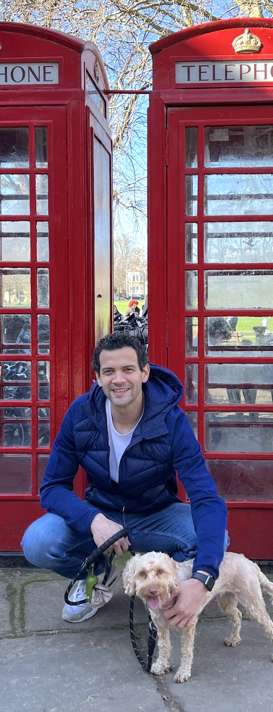

SRE · PLATFORM ENGINEERING · LONDON
Lisandro
Mentasti
I've spent the last seven years keeping production systems alive at scale — Kubernetes, on-call rotations, SLOs, the works. In my spare time I build AI infrastructure: an inference platform on K8s, a podcast search engine, a computer vision app for wine. Originally from Argentina, now in London. I run most mornings.

Projects
VIEW ALL →RunCast Intelligence
Semantic search across 4,000+ running podcast episodes. Ask anything, get answers with exact timestamps.
WineSnap
Photo a wine shelf, get the best bottle. Vision AI reads labels, web search finds prices, LLM picks value.
Writing
ALL POSTS →Now
- 01 Working as an SRE at Okta, building and maintaining Okta Workflows at enterprise scale.
- 02 Learning AI infrastructure — building side projects to understand how LLMs actually run in production.
- 03 Running most mornings. Training consistently, not quickly.
- 04 Getting into wine properly — which led to building WineSnap.
LAST UPDATED MAY 2026 · INSPIRED BY NOWNOWNOW.COM